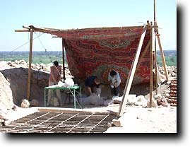

|
|||
|
Feedback from the Dig Diary has in past been very favourable. So here we go again for our first archaeological season in the third millennium AD. Aim of this seasonLike the 1999 and 2000 seasons, this is a study season. The aim is to finish this year the fieldwork which we started back in 1992. We leave for Egypt on 25 September, and hope to be in the tomb about 1 October. The first diary should be out shortly thereafter. The only shadow over this season is recent events in the USA. If those were not bad enough, we are of course watching the consequences, which we desperately hope will not cause further loss of life, and will not affect the carrying out of our aims. The DiaryA retrospect on the seasonWell, we did it, mostly. Study of the bones was not seriously possible due to illness, and the fact that a couple of members of the team didn't want to come to Egypt had some effect. However, TT99 as a major field undertaking is now done. The tomb is locked up and the objects all packed away, and there is, I think, immense satisfaction from all the team members at what they have done. Helen and I certainly are delighted, and are incredibly grateful to all who helped in the field and who also have supported us financially and with loans of equipment. A copy of the interim report has been placed here. Final report is here. Technical stuffThese pages are being prepared in Luxor on a Macintosh G3 Powerbook, using still images taken with a Nikon Coolpix 995 digital camera and digital video with a Canon XM1 camera. The images are manipulated in Photoshop 5.5, and Go Live 4 is used for making the pages. To our great surprise and pleasure, we have found that there is now an internet shop in Qurna, about 150 m from our hotel! This has always been one of my great wishes, which I did not think would happen so soon. The connection was always consistent, and the people there were very nice; the thought of just walking a short way down the road to read mail and upload pages is such a relief (especially when you forget something in the hotel)! Unfortunately, I didn't take a picture to use as an advertisement.
All text and images © Nigel & Helen Strudwick 2001 |
|||
 The Dig Diary 2001
The Dig Diary 2001© Nigel Strudwick 1997-2016